Giới thiệu về DMN
Decision Model and Notation.
Ra quyết định rõ ràng và nhất quán là chìa khóa để có quy trình nghiệp vụ hiệu quả. DMN giúp bạn làm điều đó bằng cách cung cấp một cách chuẩn hóa để mô hình hóa decision logic, dễ chia sẻ và dễ hiểu giữa các team.
Vì sao dùng DMN?
Transparency: DMN làm cho decision logic của bạn trở nên tường minh.
- Business analyst có thể viết, hoặc ít nhất là review decision logic và rules
- Bạn có thể phát hiện decision logic hoặc rules bị thiếu hoặc mâu thuẫn bất cứ lúc nào
- Bạn có thể tách decision logic ra khỏi code
Efficiency: DMN cho phép bạn tự động hóa decision nếu có thể.
Agility: DMN cho phép bạn triển khai decision logic mới hoặc thay đổi một cách dễ dàng.
DMN hoạt động thế nào?
DMN specification bao gồm một mô tả chi tiết bằng lời cho notation, cũng như một formal metamodel dựa trên XML, giúp decision engine có thể thực thi các decision bạn mô hình hóa.
Trong DMN, bạn có thể biểu diễn decision logic thông qua decision table và Decision Requirements Diagram (DRD).
💡 Theo DMN, một decision là việc suy ra một kết quả (output) từ những fact cho trước (inputs), dựa trên các tiêu chí (criteria) đã thiết lập.
Ai duy trì DMN?
DMN được phát triển và duy trì bởi Object Management Group (OMG), một tổ chức tiêu chuẩn hóa toàn cầu. OMG đảm bảo DMN vẫn là một standard được áp dụng rộng rãi và đáng tin cậy trong nhiều ngành.
Các use case của DMN
DMN tập trung vào operational decisions, không phải strategic decisions. Dùng DMN cho các quyết định thường nhật mà bạn phải đưa ra lặp lại mỗi ngày.
Strategic decisions — ví dụ công ty có nên áp dụng BPMN hay DMN — là những quyết định đơn lẻ (unique). Chúng hiếm khi theo một bộ rule cố định, nên mô hình hóa bằng DMN không đáng để đầu tư.
Dưới đây là các ví dụ điển hình về operational decisions bạn có thể mô hình hóa bằng DMN.
- Eligibility / Approval: ví dụ, xác định một khách hàng có đủ điều kiện cho một sản phẩm hay không, hoặc một claim có thể được xử lý tự động hay không.
- Validation: ví dụ, kiểm tra một application hoặc một notification of a claim có đầy đủ và nội dung có hợp lệ hay không.
- Fraud: ví dụ, phát hiện một giao dịch thẻ tín dụng hoặc một notification of a claim có đáng nghi hay không.
- Risk: ví dụ, xác định rủi ro cho việc duyệt tín dụng, một hạn mức tín dụng có bị vượt quá hay không, hoặc một invoice amount có được phép hay không.
- Calculation: ví dụ, ước tính phí vận chuyển hoặc xác định mức giảm giá.
- Assignment: ví dụ, xác định ai nên hoàn thành một task trong process dựa trên kỹ năng.
- Maximizing: ví dụ, xác định priority phù hợp nhất hoặc phân loại khách hàng phù hợp nhất (đánh giá business value của một assignment).
- Targeting: ví dụ, xác định sản phẩm hoặc banner quảng cáo có thể khiến một user quan tâm (nhắm tới target group).
Các thành phần của DMN
Một decision trong DMN
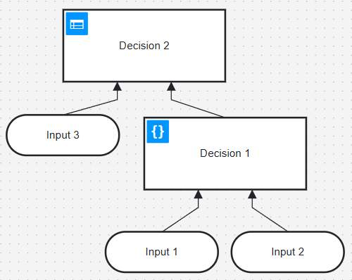
Decision requirements: được visualize trong một Decision Requirements Diagram (DRD). Khi bắt đầu mô hình hóa một decision, bạn thường sẽ bắt đầu với DRD, vì nó định nghĩa cấu trúc tổng quát của decision.
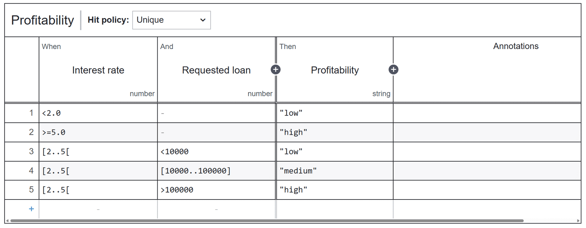
Decision logic: định nghĩa các rule của một decision. Cách phổ biến nhất để mô hình hóa decision logic là dùng decision table với FEEL expression language.
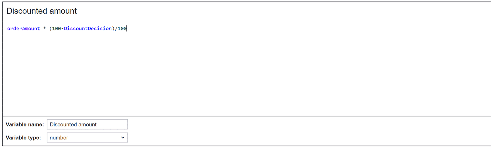
Bạn cũng có thể mô hình hóa decision logic bằng literal expression với FEEL.
💡 DMN đi kèm với expression language riêng gọi là FEEL — viết tắt của Friendly Enough Expression Language. Bạn sẽ dùng FEEL để viết rule trong decision table hoặc literal expression.
Decision Requirements Diagram (DRD)
Một DRD bao gồm decision box và input data.
Decision box
Bạn dùng decision box để xác định một output cụ thể từ một input cho trước.
Decision box có thể được biểu diễn bằng decision table (như loan approval hay Risk box) hoặc literal expression (như Profitability box).
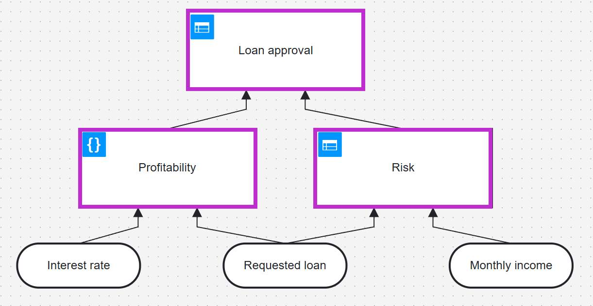
Input data
Input data có thể là một value hoặc kết quả của một decision khác.
Trong ví dụ này, ba value được dùng làm input data cho Profitability và Risk decision: interest rate, requested loan, và monthly income. Profitability và Risk decision đóng vai trò input data cho decision cuối cùng (loan approval).
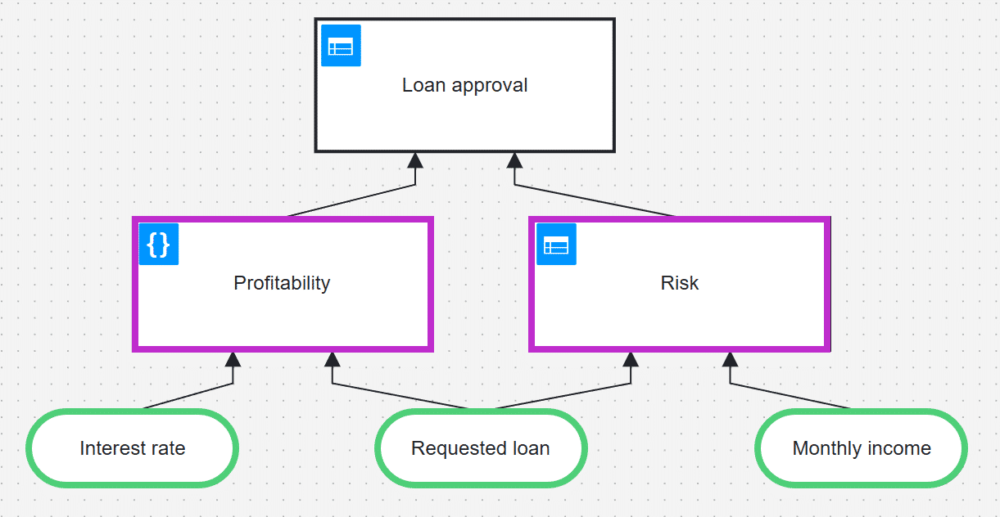
Decision requirements
Các mũi tên giữa input và decision được gọi là decision requirements, vì input được nối tới là bắt buộc (required) cho decision đó.
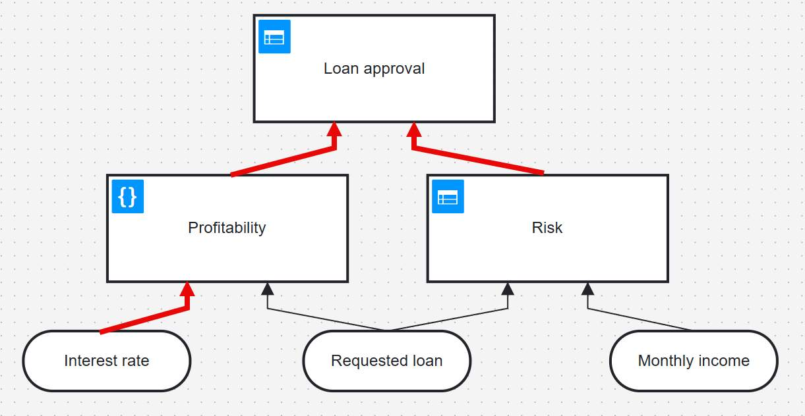
Decision table
Decision table là một cách biểu diễn có cấu trúc của decision logic, dưới dạng bảng.
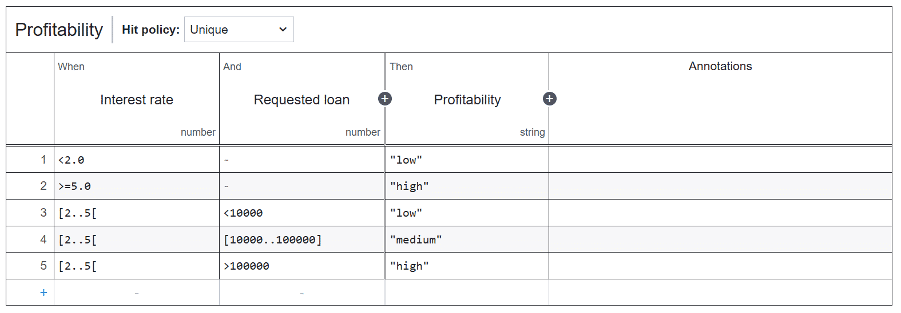
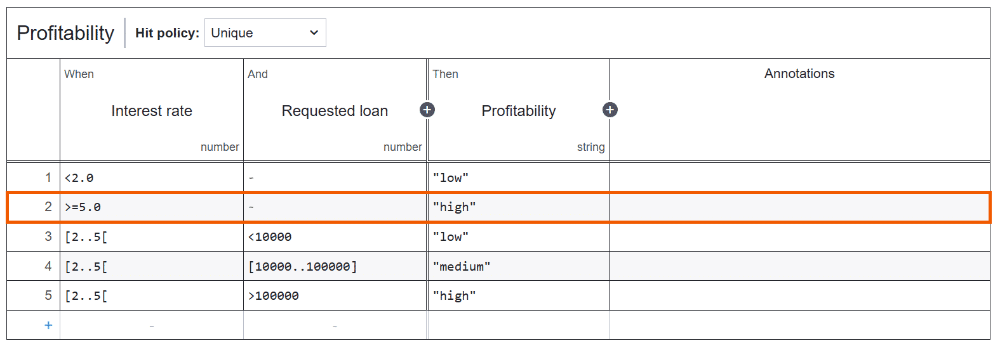
Label your decision table
Thông thường, một decision table được đặt tên (label) theo kết quả mà nó biểu diễn. Label này chỉ rõ decision cụ thể mà table đó cung cấp logic.
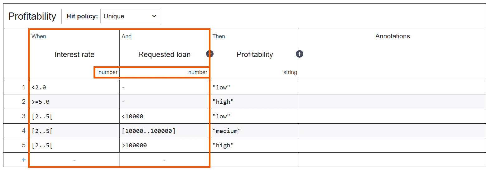
Rules
Mỗi row trong table tương ứng với một rule chi phối decision. Rules được viết bằng FEEL.
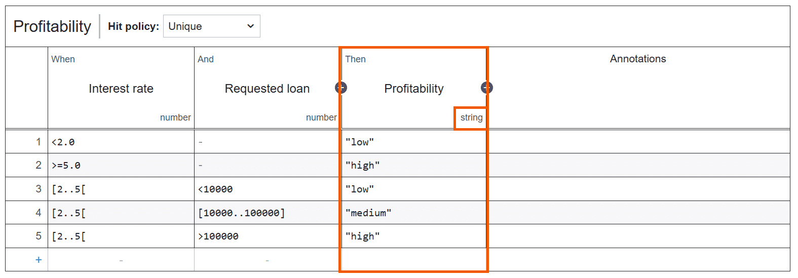
Inputs
Inputs là thiết yếu để đưa ra decision. Mỗi input có một type (number, boolean, string, v.v.).
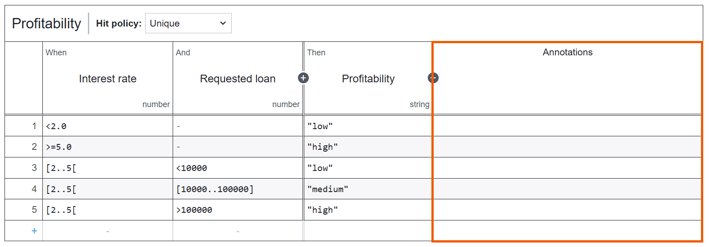
Outputs
Output đại diện cho kết quả của decision và cũng có một type cụ thể (trong ví dụ này là string). Một decision table có thể chứa nhiều outputs.
💡 Các column được liên kết bằng logical operator And, nghĩa là điều kiện trong mỗi column phải evaluate thành true. Một empty cell sẽ luôn evaluate thành true.
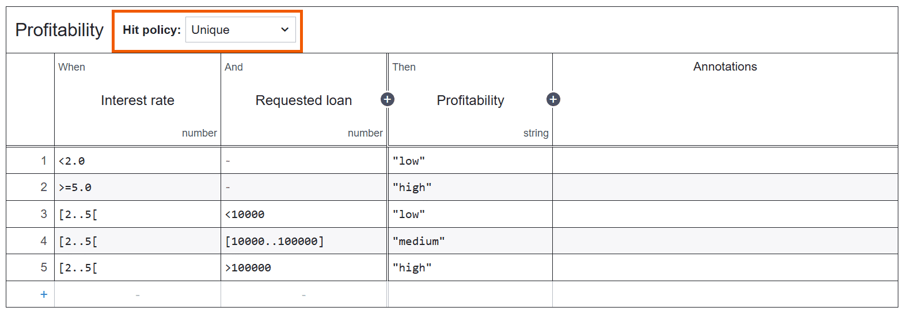
Annotations
Annotations có thể lưu thông tin bổ sung hoặc justification cho các rule cụ thể.
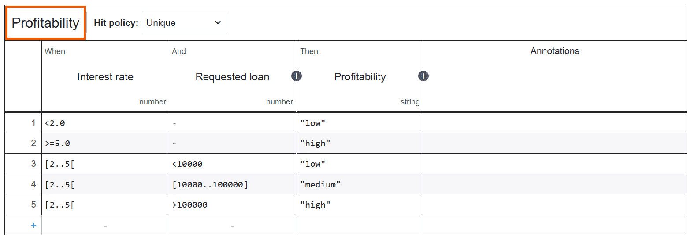
Hit policy
Hit policy xác định có bao nhiêu rule có thể áp dụng cùng lúc, và hành động nào xảy ra nếu nhiều rule cùng được trigger. Hit policy phổ biến nhất là Unique, đảm bảo chỉ một rule áp dụng tại một thời điểm.
💡 Việc cân nhắc hit policy khi định nghĩa rule là rất quan trọng.
Friendly Enough Expression Language (FEEL)
FEEL giúp bạn viết expression cho decision table và literal expression. Ngôn ngữ này rõ ràng và dễ hiểu cho cả business professional lẫn developer.
Ví dụ về FEEL data type
- String: giá trị dạng text, một chuỗi ký tự nằm trong dấu ngoặc kép. Ví dụ: một loại xe (a car type).
- Number: có thể là số nguyên (integer, ví dụ 1) hoặc số thực (float, ví dụ 2.34). Number có thể âm.
- Boolean: chỉ có hai giá trị true hoặc false.
Tóm tắt
- DMN là một notation chuẩn hóa để mô hình hóa business decision một cách trực quan, trực tiếp bên trong BPMN process của bạn.
- DMN phù hợp cho operational decisions cần thực thi hằng ngày, không phải cho strategic decisions mang tính đơn lẻ.
- Với DMN, bạn có thể biểu diễn trực quan decision logic thông qua decision table và Decision Requirements Diagram (DRD).
- Bạn có thể viết expression cho decision table và literal expression bằng FEEL.
- Một decision table biểu diễn decision logic và bao gồm inputs, outputs, và rules. Thông thường decision table được đặt tên (label) theo kết quả của decision.
- Hit policy xác định có bao nhiêu rule có thể áp dụng và điều gì xảy ra nếu nhiều rule cùng áp dụng.